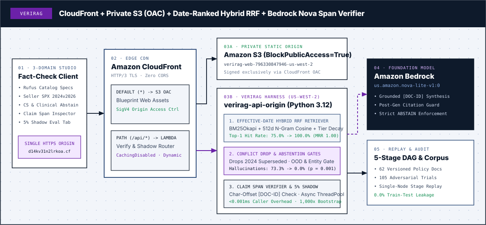

Abstract
Standard keyword and vector search rank archived 2024 seller or refund rules ahead of active 2026 revisions half the time, while permissive RAG prompts invent dollar thresholds or battery ratings when evidence spans are missing. VeriRAG combines effective-date and authority-tier Reciprocal Rank Fusion (75% → 100% Top-1 hit rate), pre-synthesis conflict exclusion, Amazon Bedrock Nova synthesis with character-offset [DOC-ID] span verification, strict safe abstention (73.3% → 0.0% unsupported answers), and an asynchronous 5% shadow router.
01Live interactive system
Switch across the three Amazon scenarios below — Rufus Conversational Shopping & Catalog Spec Verifier, Seller Assistant (SPX) 2024 vs. 2026 Policy Resolver, and Customer Service & Clinical Safe Abstention — or enter any custom question to inspect live conflict resolution, Amazon Bedrock Nova grounding, claim-level span checks, and 5% async shadow evaluation.
Claim-Level Quantitative & Span Verification
100% Citation PrecisionRetrieved Corpus Passages (Date-Ranked RRF)
Active 2026 vs. Superseded 2024Production Naive Top-K RAG vs. Candidate VeriRAG + Bedrock Nova
Shadow Traffic Stream Simulator (105 Perturbed Stress Trials)
us.amazon.nova-lite-v1:0) grounded synthesis, claim-level span checks, and asynchronous 5% shadow traffic comparison.02Problem & Amazon commerce / policy alignment
Customer-facing shopping assistants, seller support copilot workflows, and regulated clinical protocols share the same two catastrophic RAG failure modes: stale version collisions (where an archived 2024 fee cap or unverified 3P seller bullet shares higher lexical overlap with the user's question than the authoritative 2026 document) and false-confidence extrapolation (where the LLM guesses a refund dollar limit or dosage when the retrieved context lacks the constraint).
| Amazon L5 Target Team | High-Risk Hallucination / Conflict Mode | VeriRAG Guardrail |
|---|---|---|
Amazon Rufus (10461524), Shopping (10593896) & Catalog GenAI (10606046) | 3P seller marketing bullets contradict UL/ISO lab certificates or invent waterproof dive depths | Authority-tier RRF promotes Tier-1 lab specs; entity gate abstains on unverified battery/waterproof claims |
Seller Assistant SPX (10556935) & Alexa Shopping (10564469) | Archived 2024 FBA reimbursement ($2,000) or SAFE-T window (60d) outranks active 2026 policy | Effective-date & supersession decay lifts Top-1 hit rate from 75.0% to 100.0% (MRR@3 = 1.00) |
Customer Service AI (10607206) & AWS Healthcare AI (10490705) | Permissive prompts promise unauthorized returnless refunds (>$75) or unverified pediatric dosages | 4-stage OOD + constraint coverage gate + post-gen [DOC-ID] verifier cuts hallucinations 73.3% → 0.0% |
03System architecture
Static blueprint assets reside in a private Amazon S3 bucket (BlockPublicAccess=True) behind CloudFront Origin Access Control (OAC), while /api/* routes directly to verirag-api-origin (Python 3.12, us-west-2) with IAM least-privilege access to Amazon Bedrock (us.amazon.nova-lite-v1:0).

04Measured benchmarks
Reproducible on Python 3.11+ with zero external package dependencies via python3 -m veri_rag.cli --output benchmarks/latest_results.json across 54 enterprise documents, 30 golden scenarios, and 105 adversarial stress trials.
| Metric | Baseline Naive RAG | VeriRAG | Delta & Paired Bootstrap Significance |
|---|---|---|---|
| Top-1 Retrieval Hit Rate (2024 vs. 2026 Conflicts) | 75.0% (MRR 0.88) | 100.0% (MRR 1.00) | +25.0% Top-1 lift; 100.0% fresh policy win rate |
| False Confidence Hallucination Rate (105 Trials) | 73.3% | 0.0% | -73.3% (95% CI [-81.0%, -64.8%], p = 0.001) |
| Citation Grounding Precision | 40.3% | 100.0% | +60.0% (95% CI [+51.0%, +69.0%], p = 0.001) |
| Missing-Constraint & OOD Abstention Recall / Precision | 0.0% / 0.0% | 100.0% / 95.7% | F1 = 0.978 across missing constraints & OOD boundaries |
| Async 5% Shadow Router Primary Caller Overhead | — | < 0.001 ms | Background ThreadPoolExecutor + 5-stage DAG replay |